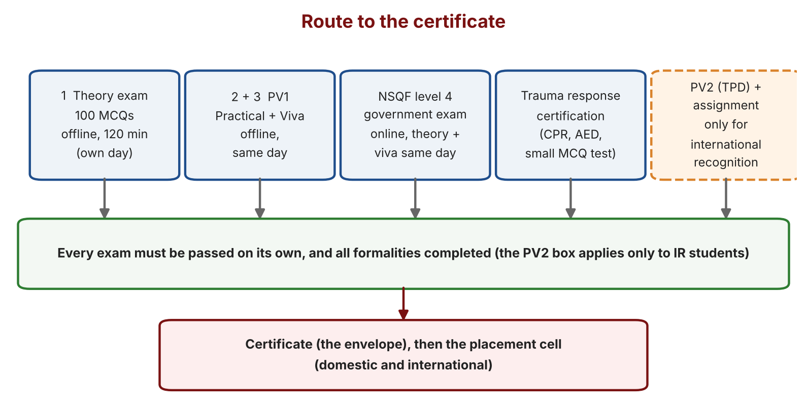
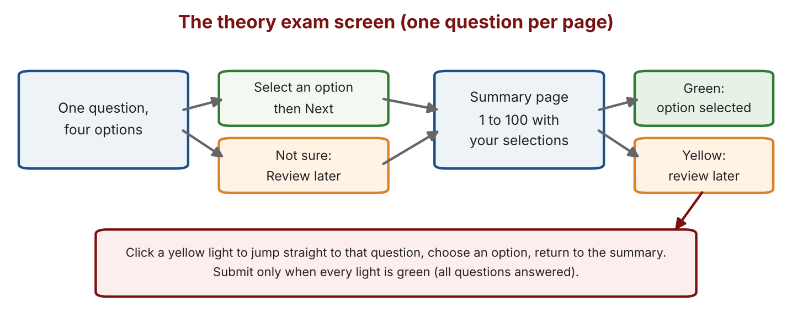
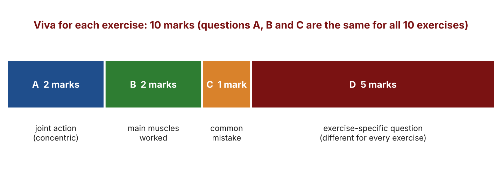

Course: Personal Training Certification
Topic: Exam types, marks and passing rules, the theory exam screen, the 10 practical exercises and the viva questions A, B, C and D
About these notes: Short revision version of the Understanding Assessment Criteria lecture. For the full explanation, see the Detailed Notes.
Big idea: Every exam is passed on its own, and the viva is predictable: questions A, B and C are the same for all 10 exercises and the D questions are announced, so prepare all of them in advance.
1. The exams
| Requirement | Who | Mode |
|---|---|---|
| Theory exam | Everyone | Offline, 120 minutes, own day |
| PV1 (practical + viva) | Everyone | Offline, same day |
| NSQF level 4 | Everyone (compulsory) | Online, theory + viva same day, no practical, run by the government |
| Trauma response certification | Everyone | Session (CPR and AED) + small MCQ test |
| PV2 (TPD) + assignment | Only international recognition (IR) students | Dummy client; assessor checks the assignment email receipt |


2. Marks and passing
| Exam | Questions | Marks each | Total | Pass |
|---|---|---|---|---|
| Theory | 100 MCQs | 1 (no negative marking) | 100 | 70 |
| Practical | 10 exercises | 10 | 100 | 6 in every exercise |
| Viva | 10 exercises | 10 (A+B+C+D) | 100 | 6 in every exercise |
| Total | 300 | Distinction: 255 or above (85%) |
- Pass each exam individually. The aggregate does not replace this.
- A distinction gives "Pass with Distinction" on the certificate and a scholarship on another course (around 6,000, to confirm).

3. Theory exam in practice
- 100 questions, 4 options, one correct, 120 minutes (the unit tests were 30 questions in 30 minutes).
- No marks for finishing early. Use the spare time to check.
- One question per page, Review later button, then a summary page.
- Green = an option is selected (not "correct"). Yellow = review later or unanswered. Click a yellow light to jump to it. Submit only when all are green.
- Rehearse by joining unit tests 1, 2 and 3 of a running batch.


4. The 10 practical exercises
| No. | Exercise | Choice |
|---|---|---|
| 1 | Squat | Front or back |
| 2 | Step-up or static lunge | Either |
| 3 | Sumo or regular deadlift | Either |
| 4 | Bent-over row (DB) | None |
| 5 | Lat pull-down (wide grip) | None |
| 6 | Flat dumbbell chest press | None |
| 7 | Strict overhead press | None |
| 8 | Dumbbell lateral raise | None |
| 9 | Prone high row | None |
| 10 | Forward crunch (flat on the mat) | None |
Two promises: do not train only these 10 exercises before the practical phase, and pay attention to every exercise taught, not only these.
5. The viva: A, B, C, D


| Question | Marks | Asks for |
|---|---|---|
| A | 2 | Joint action (concentric) |
| B | 2 | Main muscles worked |
| C | 1 | A common mistake specific to the exercise |
| D | 5 | Exercise-specific question (different for each exercise) |
6. A and B for every exercise
| No. | A: joint action | B: muscles |
|---|---|---|
| 1 Squat | Hip extension, knee extension | Gluteus maximus and adductor magnus; quadriceps |
| 2 Step-up or static lunge | Hip and knee extension, lateral hip stabilisation | Same, plus gluteus medius and minimus (stabilisers) |
| 3 Deadlift | Hip extension, knee extension (sumo adds adduction) | Gluteus maximus and adductor magnus; quadriceps; no hamstrings; sumo adds adductors |
| 4 Bent-over row | Shoulder extension, elbow flexion, scapular retraction | Latissimus dorsi, rhomboid major and minor, middle trapezius, elbow flexors |
| 5 Lat pull-down | Shoulder adduction, elbow flexion | Diagonal fibres of latissimus dorsi, elbow flexors, lower trapezius (isometric) |
| 6 Flat DB chest press | Shoulder horizontal adduction, elbow extension | Pectoralis major (sternocostal head, then abdominal head), triceps |
| 7 Strict overhead press | Shoulder vertical abduction, elbow extension | Anterior deltoid, triceps |
| 8 DB lateral raise | Shoulder abduction | Middle deltoid |
| 9 Prone high row | Shoulder horizontal abduction, elbow flexion | Posterior deltoid, elbow flexors |
| 10 Forward crunch | Spine flexion | Rectus abdominis only |
Answering tips: use full muscle names (not "lats" or "traps"); say "elbow flexors" as the safe term; name the prime movers, not only the stabilisers; answer as a story (action with its muscle); make common mistakes specific to the exercise and collect them in the practical sessions.
7. The D questions
| No. | D question | Key points |
|---|---|---|
| 1 | Why squat? | Functional carryover (three mini points); structural development (soft tissues and bone density) |
| 2 | Why unilateral leg work? | Symmetrical development (neural phase, then hypertrophy of the weaker side); lateral hip stabilisation challenge |
| 3 | Why deloading is better? | Five to six points from the stretching lecture (stretch reflex applications): no stretch reflex help, no bounce, breathing and grip, less stress on the spine, functional relevance |
| 4 | (i) Torso parallel to the floor? (ii) Dumbbell over barbell? | (i) Longer moment arm and torque, greater range of motion. (ii) Isolateral advantage (symmetry), natural hanging grip |
| 5 | (i) Anchoring and body position? (ii) Wide versus narrow grip? | (i) Leg drive, stability, upright torso avoids momentum and keeps the frontal plane. (ii) Wide: adduction, diagonal fibres, width. Narrow: extension, horizontal fibres, thickness |
| 6 | Flat versus incline | Look at where the humerus travels: flat gives the sternocostal head then the abdominal head, incline gives the clavicular head |
| 7 | Strict versus push press | Strict: no outside help, anterior deltoid alone. Push: help from the lower body, heavier load. Core works in both |
| 8 | Why arms sideways? | Stays in the frontal plane: abduction, middle deltoid. Forward arms: plane, function and muscle change (towards anterior deltoid) |
| 9 | Why elbows outwards? | Keeps the horizontal plane: horizontal abduction, posterior deltoid. Otherwise it becomes a bent-over row for latissimus dorsi |
| 10 | Why strengthen abs? | Spine stability, spine movement (flexion), bracing (transversus abdominis), breathing |
Key terms
| Term | Meaning |
|---|---|
| PV1 | Practical and viva, offline, same day |
| PV2 or TPD | Training program delivery exam for IR students only |
| IR | International recognition |
| NSQF level 4 | Government-run online theory and viva exam, compulsory |
| Pass per exercise | At least 6 of 10 in every practical and viva exercise |
| Distinction | 85% or above of 300, which is 255 or more |
| Review later | Exam screen button that marks a question yellow for a later check |
| Isolateral | Each side works independently (dumbbell advantage) |
| Concentric | The lifting phase, used for viva question A |
Where the sources differ
- The scholarship amount for a distinction was said as "around 6,000" with no currency. Confirm it.
- The board says "deloading" for exercise 3, but the points quoted in class sound like "reloading". Confirm the meaning.
- The leaning lat pull-down was called "horizontal abduction" in the lecture. Leaning back is more usually shoulder extension.
- One sentence named the anterior deltoid for the sideways lateral raise. The middle deltoid is taken as the target.
Quick revision questions
- How many marks and questions are in the theory exam, and what is the pass mark?
- Is there negative marking in the theory exam?
- How long is the theory exam, and how many minutes per question does it give compared with a 30-question unit test?
- Which two exams make up PV1, and when are they taken?
- What is the pass rule for the practical exam?
- Why is the pass rule given per exercise and not as a total?
- How many marks in total, and what score gives a distinction?
- Who must take PV2, and what else must they submit?
- Who runs NSQF level 4, and what does it contain?
- What does a green light on the summary page mean?
- What do A, B, C and D ask for, and how many marks does each carry?
- Which viva questions are the same for all exercises?
- State A and B for the squat.
- Why should a deadlift answer not mention the hamstrings, and what extra does the sumo add?
- State A and B for the lat pull-down.
- Which head of pectoralis major is dominant on a flat bench and which on an incline?
- Why should the arms go sideways in a lateral raise?
- Why must the elbows go outwards in the prone high row?
- Give the two parts of the D question for the lat pull-down.
- Give four reasons for strengthening the abdominal muscles.
Answers
- 100 MCQs of one mark each; pass at 70.
- No.
- 120 minutes. That is 1.2 minutes per question, compared with 1 minute per question in a 30-question, 30-minute unit test.
- Practical and viva, offline, on the same day.
- At least 6 marks out of 10 (60%) in every exercise.
- So a student cannot score full marks in a few exercises and ignore the rest.
- 300 marks; 255 or more (85% of 300).
- Students who applied for international recognition. They must submit the assignment (the assessor asks for the email receipt).
- The government. It is online theory and viva on the same day, with no practical, and is compulsory.
- An option has been selected for that question. It does not show whether it is correct.
- A: joint action, 2 marks. B: main muscles, 2 marks. C: common mistake, 1 mark. D: exercise-specific question, 5 marks.
- A, B and C. The answers differ, the questions are the same.
- A: hip extension and knee extension. B: gluteus maximus and adductor magnus for the hip, quadriceps for the knee.
- The hamstrings do not work well in compound lifts (reciprocal inhibition). The sumo adds adduction, so the adductors work too.
- A: shoulder adduction and elbow flexion. B: diagonal fibres of latissimus dorsi, and the elbow flexors (lower trapezius works isometrically).
- Sternocostal head on the flat bench (then the abdominal head). Clavicular head on the incline.
- To stay in the frontal plane doing abduction with the middle deltoid. Forward arms change the plane, the action and the target muscle.
- To stay in the horizontal plane doing horizontal abduction with the posterior deltoid. Otherwise it becomes a bent-over row for latissimus dorsi.
- (i) The importance of anchoring and body positioning. (ii) Wide versus narrow grip.
- Spine stability, spine movement, bracing and breathing.
Board Photos from the Lecture